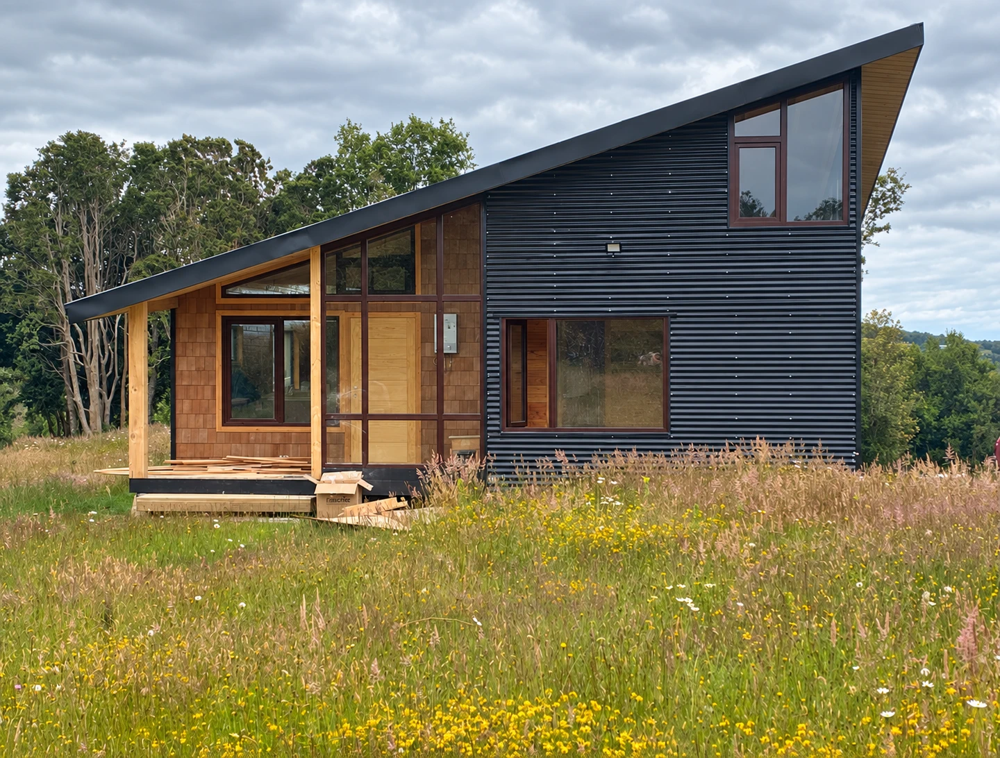

Gómez & Gómez Construcciones · Dirección visual V2
El azul define la marca. Las obras cuentan su historia.
El cobalto de la muestra entregada por el usuario es la referencia principal. Grafito, hueso, gris y café madera completan el sistema. La interfaz no utiliza verdes. La vegetación y los materiales fotografiados conservan su color natural.
Navbar sólido, presentación de la empresa, menú, transición y contacto. Grandes superficies reconocibles. Los CTA invierten la relación: hueso sobre cobalto, cobalto sobre hueso.
HABLEMOS DE TU CASA ↗El grafito concentra la atención en las fotografías. La madera acompaña el oficio. El hueso ofrece una pausa en el recorrido, sin dominar toda la página.
El logo aportado se conserva como archivo original. En fondos oscuros se presenta una adaptación cromática mediante CSS, manteniendo su geometría.
TU CASA.
TU LUGAR.
Titulares, proyectos y CTA. Mayúsculas, formas condensadas y peso 400. El gesto recuerda la rotulación de una obra.
Construimos donde quieres vivir.
Textos, formularios y navegación. Cuerpo base de 18 px, interlineado generoso y lenguaje directo. Archivos y licencias incluidos localmente.

Grandes encuadres, materiales legibles y estados de obra identificados. Huicha se reserva para la portada y su recorrido. Nercón, Notuco y Tara aportan variedad real al portafolio.
Las versiones editoriales de la V1 se mantienen donde aportan valor. Son retoques generativos; los originales documentales permanecen en el archivo de investigación. El vídeo conserva la arquitectura y recibe una corrección global moderada de luminosidad.
| Momento | Tratamiento |
|---|---|
| Portada | Vídeo real, apertura de máscara y titular escalonado |
| Presentación | Revelado de retrato y frase en desplazamiento |
| Obras | Fotografía que se abre y controles que responden |
| Oficio | Tres escenas de vídeo; secuencia fijada en escritorio |
| Transformación | Comparación ligada al recorrido, con control manual |
| Menú y galerías | Transiciones continuas, foco visible y teclado |
GSAP y ScrollTrigger locales. Vídeos silenciosos con pausa; carga diferida fuera de la portada. Movimiento reducido desactiva las animaciones y el autoplay.
Hablar de la casa, el lugar y el trabajo. Explicar la precisión con imágenes del equipo y ejemplos concretos. Evitar promesas sin respaldo y cifras inventadas.
La consulta se prepara localmente. El visitante revisa el mensaje y decide enviarlo por WhatsApp.
ERA · Silver Pinewood · Casos de Vide Infra, incluido AIR.
Referencias de jerarquía fotográfica y continuidad visual. La identidad cobalto corresponde al encargo de Gómez & Gómez. Todas las obras y tomas proceden de su Instagram; retrato y logo aportados por el usuario.